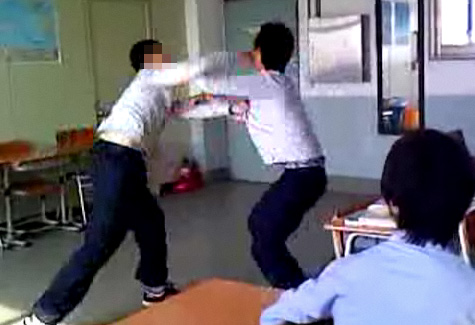

야차룰 - 그 누구도 말릴 수 없는 혼돈의 룰
“정정당당? 그딴 거 없다!”
이것이 바로 야차룰의 시작이자 끝이다.
모든 수단과 방법은 허용된다. 심지어 비둘기 소환도..

주요 특징
- 각종 무기 사용 가능
- 땅, 공중, 벽, 천장, 4차원까지 활용 가능
- 기습, 속임수, 항복하는 척 급소 찌르기 가능
- 공중부양, 마법, 포탈, 그림자 분신술 등 가능
- 반칙 없음, 심판 없음. 도덕심도 없음.
주의사항
- 이 룰은 위험하다. (잘못하면 지구 멸망 가능)
- 친구와의 사이가 틀어질 수 있음
※ “야차룰”... 그것은 싸움이 아닌 예술이다.